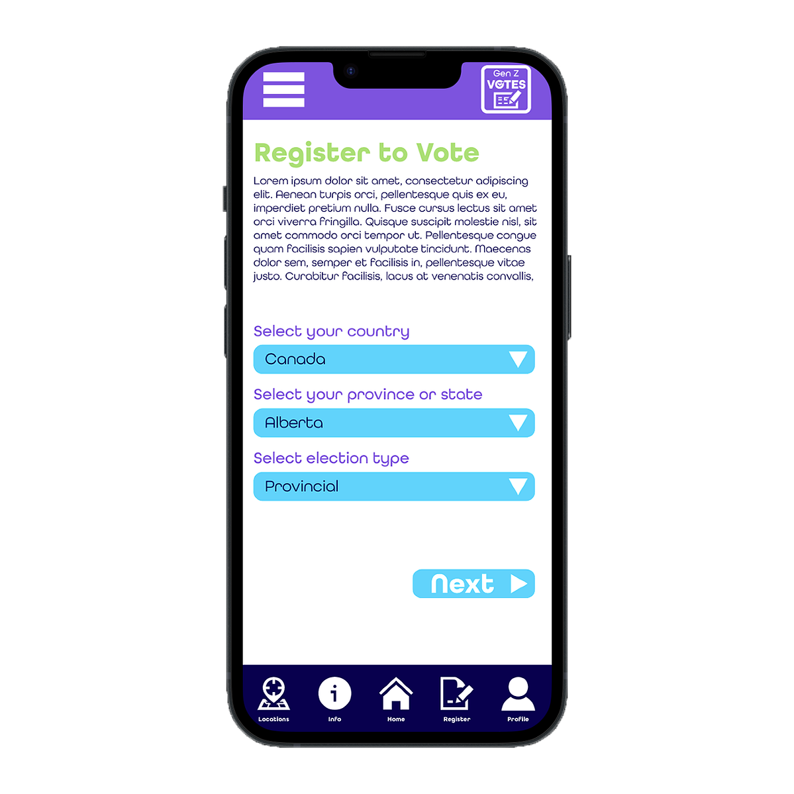

Google UX Design Certificate
Background
As part of the Google UX Design Certificate, I completed the project included below.
Gen Z Votes

Overview
Gen Z Votes is an app designed by myself to promote youth engagement in elections. The app was created to help young people feel more confident in their ability to participate in the democratic process by providing easy-to-use features to register to vote, access election information, and engage with other voters.
Design Goals
- Encourage young people to participate in the democratic process
- Make it easy for users to register to vote
- Provide clear and concise information about upcoming elections
- Allow users to connect with other voters and share their opinions
- Create an engaging and user-friendly experience
Design Process
User interviews and surveys → competitive analysis → user personas → low-fidelity wireframes → user testing → high-fidelity design incorporating brand guidelines.
Design Solutions
- Clear and Simple Registration Process (step-by-step, in-app)
- Interactive Election Calendar (with personal calendar sync)
- Informative Content (candidate/issue/ballot summaries + resource links)
- Future Social Features (planned, not yet in prototype)
Outcome
Although the Gen Z Votes app has not been launched yet, the design has received positive feedback from test users and stakeholders.
Mockup
View the prototype on Adobe XD: xd.adobe.com/view/2e25a0cd-8fbe-4e3d-ba5d-84bc0874535f-7b76